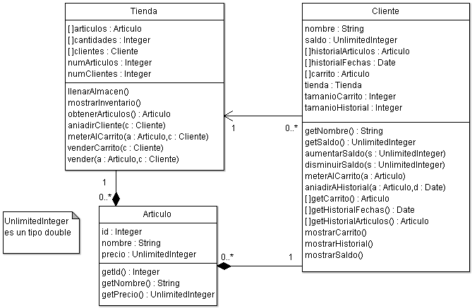

Programación Orientada a Objetos. Curso
2010/2011
| Calendario |
Lunes |
Martes |
Miércoles |
Jueves |
Viernes |
Observaciones |
| Inicio |
21/2 |
22/2 |
23/2 |
17/2 |
18/2 |
|
| Evaluación |
07/3 |
08/3 |
09/3 |
03/3 |
04/3 |
Entrega el día anterior.
El grupo del lunes 2 horas antes del comienzo de la clase |
El objetivo de la primera práctica es aprender la sintaxis básica de Java (suponiendo experiencia en C) y adquirir familiaridad con el entorno de desarrollo NetBeans. Las prácticas del curso consistirán en implementar un programa para gestionar una tienda virtual. En la primera práctica el alumno deberá desarrollar un código sencillo que implemente la funcionalidad básica de la tienda: gestionar el almacén, gestionar los clientes y realizar ventas. Como punto de partida se facilita un proyecto de netbeans incompleto, un diagrama de clases que muestra las relaciones entre las clases Tienda, Cliente y Articulo, y una clase Main de ejemplo junto con la salida que debería generar.
NOTA: Todas las clases deberán incluir la documentación JavaDoc para poder generar una memoria html que describa cada clase y método diseñado.

public static void main(String[] args) {
// Creamos tienda, llenamos el almacen y mostramos el inventario:
Tienda t = new Tienda();
t.llenarAlmacen();
t.mostrarInventario();
// Creamos cliente, lo registramos en la tienda y mostramos su saldo:
Cliente c = new Cliente("Pedro", 1000);
t.aniadirCliente(c);
c.mostrarSaldo();
// Obtenemos array de articulos en la tienda:
Articulo[] articulos = t.obtenerArticulos();
// Ejemplo de venta directa:
t.vender(articulos[0],c);
// Mostramos el estado del inventario, el saldo y el historial del
// cliente despues de la compra:
t.mostrarInventario();
c.mostrarSaldo();
c.mostrarHistorial();
// Ejemplo de venta mediante el carrito:
t.meterAlCarrito(articulos[1],c);
t.meterAlCarrito(articulos[3],c);
c.mostrarCarrito();
t.venderCarrito(c);
// Mostramos el estado del inventario, el saldo y el historial del
// cliente despues de la compra:
t.mostrarInventario();
c.mostrarSaldo();
c.mostrarHistorial();
//----------------------------------------------------------------------
// Algunas cosas prohibidas:
//----------------------------------------------------------------------
// 1. Intentamos meter al carrito un articulo que no esta en el inventario:
t.meterAlCarrito(new Articulo(99,"ArticuloTrampa",0),c);
// 2. Intentamos comprar un articulo que no esta en el inventario:
t.vender(new Articulo(99,"ArticuloTrampa",0),c);
// 3. Un cliente no registrado intenta comprar en la tienda:
t.vender(articulos[0],new Cliente("ClienteNoRegistrado"));
}
Mostrando inventario de la tienda:
-----------------------------------------------------------
[ 0] Articulo: Cero (ref. 0), 10.0 euros + iva
Cantidad en stock: 12
-----------------------------------------------------------
[ 1] Articulo: Uno (ref. 1), 20.0 euros + iva
Cantidad en stock: 9
-----------------------------------------------------------
[ 2] Articulo: Dos (ref. 2), 15.0 euros + iva
Cantidad en stock: 10
-----------------------------------------------------------
[ 3] Articulo: Tres (ref. 3), 180.0 euros + iva
Cantidad en stock: 15
-----------------------------------------------------------
[ 4] Articulo: Cuatro (ref. 4), 105.0 euros + iva
Cantidad en stock: 4
-----------------------------------------------------------
[ 5] Articulo: Cinco (ref. 5), 99.0 euros + iva
Cantidad en stock: 1
-----------------------------------------------------------
Saldo actual de Pedro: 1000.0
Vendiendo articulo Cero a cliente Pedro:
Mostrando inventario de la tienda:
-----------------------------------------------------------
[ 0] Articulo: Cero (ref. 0), 10.0 euros + iva
Cantidad en stock: 11
-----------------------------------------------------------
[ 1] Articulo: Uno (ref. 1), 20.0 euros + iva
Cantidad en stock: 9
-----------------------------------------------------------
[ 2] Articulo: Dos (ref. 2), 15.0 euros + iva
Cantidad en stock: 10
-----------------------------------------------------------
[ 3] Articulo: Tres (ref. 3), 180.0 euros + iva
Cantidad en stock: 15
-----------------------------------------------------------
[ 4] Articulo: Cuatro (ref. 4), 105.0 euros + iva
Cantidad en stock: 4
-----------------------------------------------------------
[ 5] Articulo: Cinco (ref. 5), 99.0 euros + iva
Cantidad en stock: 1
-----------------------------------------------------------
Saldo actual de Pedro: 990.0
Historial de compras de Pedro:
-----------------------------------------------------------
Cero (ref. 0), 10.0 euros + iva comprado en Tue Feb 15 14:07:02 CET 2011
-----------------------------------------------------------
Contenido del carrito de Pedro:
-----------------------------------------------------------
-- Uno (ref. 1), 20.0 euros + iva
-- Tres (ref. 3), 180.0 euros + iva
-----------------------------------------------------------
Vendiendo articulo Uno a cliente Pedro:
Vendiendo articulo Tres a cliente Pedro:
Mostrando inventario de la tienda:
-----------------------------------------------------------
[ 0] Articulo: Cero (ref. 0), 10.0 euros + iva
Cantidad en stock: 11
-----------------------------------------------------------
[ 1] Articulo: Uno (ref. 1), 20.0 euros + iva
Cantidad en stock: 8
-----------------------------------------------------------
[ 2] Articulo: Dos (ref. 2), 15.0 euros + iva
Cantidad en stock: 10
-----------------------------------------------------------
[ 3] Articulo: Tres (ref. 3), 180.0 euros + iva
Cantidad en stock: 14
-----------------------------------------------------------
[ 4] Articulo: Cuatro (ref. 4), 105.0 euros + iva
Cantidad en stock: 4
-----------------------------------------------------------
[ 5] Articulo: Cinco (ref. 5), 99.0 euros + iva
Cantidad en stock: 1
-----------------------------------------------------------
Saldo actual de Pedro: 790.0
Historial de compras de Pedro:
-----------------------------------------------------------
Cero (ref. 0), 10.0 euros + iva comprado en Tue Feb 15 14:07:02 CET 2011
-----------------------------------------------------------
Uno (ref. 1), 20.0 euros + iva comprado en Tue Feb 15 14:07:02 CET 2011
-----------------------------------------------------------
Tres (ref. 3), 180.0 euros + iva comprado en Tue Feb 15 14:07:02 CET 2011
-----------------------------------------------------------
-- Error: Articulo no existe en la tienda.
Vendiendo articulo ArticuloTrampa a cliente Pedro:
-- Error: Articulo no existe en la tienda.
Vendiendo articulo Cero a cliente ClienteNoRegistrado:
-- Error: Cliente no esta registrado en la tienda.
Las prácticas se deben entregar antes de la fecha de
evaluación indicada al comienzo del enunciado, teniendo en
cuenta las horas límite
de entrega mencionadas en las normas
de la asignatura.
El fichero .zip a entregar debe incluir:
NOTA: Las entregas que no cumplan los requisitos enumerados en las normas recibirán una penalización de 0.5 puntos.
(C) 2010-2011 Escuela Politécnica Superior, UAM{kind=link}